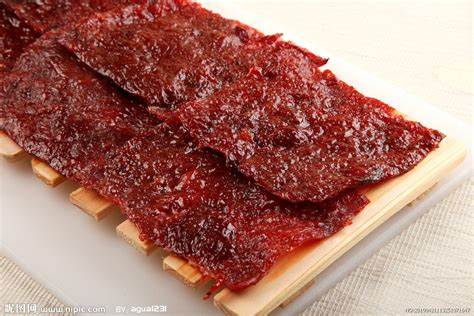
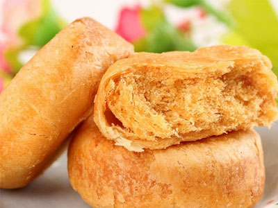

自我介绍
我是通信1903班的陈建有，我来自海南海口
网购美食
猪肉铺
猪肉脯是一种用猪肉经腌制、烘烤的片状肉制品，食用方便、制作考究、美味可口、耐贮藏和便于运输的中式传统风味。其色泽呈鲜艳的棕红色。需选用新鲜猪肉后腿部分，剔去皮、膘、筋骨，取其整块纯瘦肉为基本原料。 
肉松饼
金丝肉松饼是由优质肉松和面皮经过一定的工艺制作而成，味道可口鲜美，可及时速食。肉松或称肉绒，是用猪的瘦肉或鱼肉、鸡肉除去水分后而制成的，肉松是亚洲常见的小吃，在中国、日本、泰国、马来西亚、新加坡都很常见。一般的肉松都是磨成了末状物，适合儿童食用。将肉松拌进粥里或蘸镘头食用 